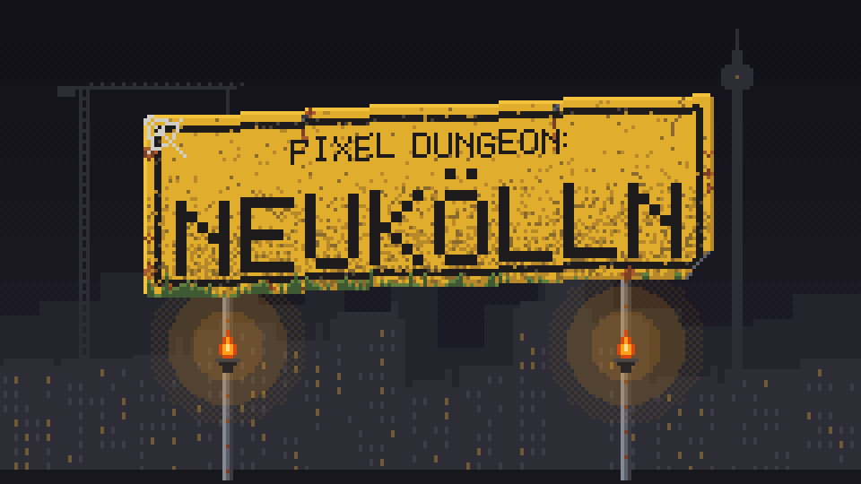

Texte zum Übernehmen
Du wolltest zur Sitzung beim Mieterverein und nur kurz das Fahrrad aus dem Keller holen, dann fiel die Brandschutztür zu, und jetzt verhandelst du 25 Ebenen tiefer selbst: mit dem Endgegner, dem Ewigen Mietspiegel.
Pixel Dungeon Neukölln ist ein Roguelike auf Deutsch für Desktop und Android. Du willst zum Mieterverein, der Bus fährt dir vor der Nase weg, und beim Fahrradholen fällt die Kellertür zu. Also geht es 25 Ebenen hinab, vorbei an Leihscootern und Maklern, zum Endgegner: dem Ewigen Mietspiegel. Es basiert auf dem Open-Source-Roguelike Shattered Pixel Dungeon und kostet null Euro kalt.
Montagmorgen, Hermannplatz. Du musst zur Sitzung beim Mieterverein, doch die M41 kommt erst nicht und fährt dir dann vor der Nase weg. Also schnell das Fahrrad aus dem Keller holen. Hinter dir fällt die Brandschutztür ins Schloss, der Schlüssel liegt irgendwo weiter unten. Das Fahrrad hoffentlich auch.
Pixel Dungeon Neukölln ist ein kostenloses, deutschsprachiges Roguelike für Desktop und Android, ohne Werbung und ohne Käufe. Es basiert auf dem Open-Source-Roguelike Shattered Pixel Dungeon: Gekämpft wird Zug um Zug, jede Partie baut die Ebenen neu, und wer stirbt, fängt oben wieder an. Wie bei der Wohnungssuche, nur fairer.
25 Ebenen führen durch Hinterhöfe, ein Amt ohne Termine, eine U-Bahn-Baustelle, die seit Jahren im Herbst fertig wird, und ein Renditequartier bis unter das Rathaus. Ein Leihscooter klingelt, bevor er dich rammt. Makler vermitteln im Flur die Termine des Amts, Provision zwei Nettokaltmieten. Jede Sonderattacke wird angesagt, die Felder sind markiert. Endgegner ist der Ewige Mietspiegel, und der wächst alle zwei Jahre.
Dazu läuft ein eigens für das Spiel geschriebener Techno-Soundtrack: 31 Tracks plus Klangbetten fürs Intro, komplett im Code synthetisiert. Einlass ohne Gästeliste.
Gespielt wird als Alteingesessene, Expat, Zugezogene oder Tourist. Die Satire zielt auf Vermieter, Makler und Behörden als Apparat, gelacht wird über Verhalten, nie über Herkunft. Einkaufen kannst du nur beim Spätimann. Er ist hier unten der Einzige, der zuständig ist.
Faktenblatt
| Titel | Pixel Dungeon Neukölln |
|---|---|
| Genre | Rundenbasiertes Roguelike, Dungeon Crawler |
| Plattformen | Windows, macOS, Linux, Android iOS später |
| Preis | Kostenlos, keine Werbung, keine Käufe im Spiel |
| Sprache | Deutsch |
| Status | In Entwicklung, Version 0.1.0 |
| Lizenz | GNU GPL v3, Quellcode offen |
| Basiert auf | Shattered Pixel Dungeon von Evan Debenham, das auf Pixel Dungeon von Watabou basiert. Inoffizieller Fan-Fork, nicht vom Original-Entwickler unterstützt. |
| Entwicklung | codeausberlin, Berlin |
|---|---|
| Veröffentlichung | [DATUM EINTRAGEN] |
| Download | [LINK EINTRAGEN] |
| Quellcode | [LINK ZUM RELEASE-TAG EINTRAGEN] |
| Installation | Download-Paket je System, Java-Laufzeit ist enthalten. Die Pakete sind nicht signiert, beim ersten Start warnt das Betriebssystem; die beiliegende LIESMICH.txt erklärt das. |
| Spielstände | Getrennt von Shattered Pixel Dungeon |
| Kontakt | [KONTAKT EINTRAGEN] |
Eingebaut und im Spiel angesehen: Titel, Intro, Heldenwahl und Ebene 1. Die Regionen ab Ebene 6 mit ihren Gegnern, Bossen und Figuren sind eingebaut, aber noch nicht alle im laufenden Spiel geprüft. Ein kompletter Lauf bis zum Mietvertrag ist noch nicht als getestet dokumentiert. Die Soundeffekte stammen aus dem Original. Nur die deutsche Sprachfassung ist umgebaut. Android und iOS sind noch nicht geprüft.
Features
- Nur kurz in den KellerDas vertonte Intro schickt dich zur Sitzung beim Mieterverein. Die M41 fährt dir vor der Nase weg, du holst das Fahrrad, und hinter dir fällt die Brandschutztür ins Schloss. Die Sitzung fängt ohne dich an.
- Wer bist du im Kiez?Die Alteingesessene steckt ein und weicht keinen Zentimeter. Der Expat zaubert mit Startup-Jargon, die Zugezogene hält Abstand und schießt, der Tourist schlägt zu, bevor ihn jemand bemerkt. Gemeinsam haben sie nur den Vermieter.
- 25 Ebenen abwärtsHinterhöfe, das Amt ohne Termin, die ewige U-Bahn-Baustelle, das Renditequartier und das Fundament unter dem Rathaus. Die Baustelle wird voraussichtlich im Herbst fertig. Welcher Herbst, steht nicht da.
- Der Kiez schlägt zurückEin Leihscooter klingelt einen Zug lang, dann rast er geradeaus und rammt, was im Weg steht. Dazu kommen Pfandgolem, Makler, Presslufter, Technojünger, Luxussanierer und eine Hausordnungs-Hydra. Einen Parkplatz hat der Scooter noch nie gefunden.
- Absurd, aber fairWer eine Sonderattacke plant, kündigt sie an, und die betroffenen Felder werden markiert. Das unterscheidet die Gegner von der Hausverwaltung.
- Der Spätimann hat offenAuf den Ebenen 6, 11 und 16 kaufst und verkaufst du beim Spätimann. Er ist hier unten der Einzige, der zuständig ist.
- Aufwachen im ClubAuf den Ebenen 16 bis 19 landest du ohne Ausrüstung in einem Club-Labyrinth und jagst sieben Garderobenmarken hinterher. Ohne Marke keine Jacke, das gilt auch hier.
- Endgegner: der Ewige MietspiegelGanz unten wartet er, sieht deine Nettokaltmiete und wächst alle zwei Jahre. Besiegt sagt er nur: „ICH. WERDE. IN. ZWEI. JAHREN. NEU. ERHOBEN.“
- Techno aus dem Keller31 Tracks Berliner Techno plus Klangbetten fürs Intro, eigens für das Spiel geschrieben und komplett im Code synthetisiert. Kein Türsteher, keine Gästeliste, du bist drin.
- Kostenlos, ohne HakenKein Preis, keine Werbung, keine Käufe im Spiel, der Quellcode ist offen unter der GPLv3. Das Einzige hier unten ohne Nebenkosten.
Die Hausgemeinschaft


Screenshots
Aufnahmen aus dem laufenden Spiel, Desktop, 1024 × 640 Pixel. Klick öffnet die Originaldatei.

PNG laden

PNG laden

PNG laden

PNG laden

PNG laden

PNG laden

PNG laden

PNG laden

PNG laden

PNG laden
Animierte GIFs


Logo, Icon und Artwork


Key-Art und Regionen




Alle Bilder stehen wie das Spiel unter der GPLv3 und dürfen für die Berichterstattung frei verwendet werden. Bitte den Titel „Pixel Dungeon Neukölln“ nennen. Pixelgrafik am besten nur in ganzzahligen Schritten vergrößern.
Pressezeilen
Sachliche Zeilen zum Übernehmen. Es gibt noch keine Pressestimmen, und wir zitieren keine.
Pixel Dungeon Neukölln ist ein kostenloses, deutschsprachiges Roguelike für Windows, macOS, Linux und Android, ohne Werbung und ohne Käufe im Spiel.
Auf dem Weg zur Sitzung beim Mieterverein holt die Spielfigur nur kurz das Fahrrad aus dem Keller und landet 25 Ebenen tiefer beim letzten unbefristeten Mietvertrag Berlins.
Der Weg führt durch Neuköllner Hinterhöfe, ein Amt ohne Termine, eine ewige U-Bahn-Baustelle, ein Renditequartier und das Fundament unter dem Rathaus; Endgegner ist der Ewige Mietspiegel.
Zur Wahl stehen vier Rollen: Alteingesessene, Expat, Zugezogene und Tourist; die Satire richtet sich gegen Vermieter, Makler und Behörden als Apparat, nie gegen Herkunft.
Der Soundtrack umfasst 31 eigens für das Spiel geschriebene Techno-Tracks, vollständig im Code synthetisiert.
Das Spiel ist in Entwicklung, die aktuelle Version ist 0.1.0.
Credits
- Neukölln-Setting, neue Gegner, Texte, Pixelart und Soundtrack: codeausberlin
- Inoffizieller Fork, nicht vom Original-Entwickler unterstützt. Fehler bitte an uns melden, nicht an das Original.
- Shattered Pixel Dungeon von Evan Debenham (ShatteredPixel.com)
- basierend auf Pixel Dungeon von Watabou
- Splash- und Dungeon-Art: Aleksandar Komitov · Musik: Lumine Haaristo · Item-Pixelart: PumpkinVolt · Soundeffekte: Celesti · weitere Pixelart: Alastair Braun · Pixel-Dungeon-Musik: Cube Code
- Soundeffekte enthalten Samples von freesound.org (CC BY und CC0); die vollständige Liste steht im Spiel unter „Über“.
- libGDX, Pixel Dungeon GDX (Edu García), Shattered GDX Help (Kevin MacMartin) und die ehrenamtlichen Übersetzerinnen und Übersetzer von Shattered
Wer das Original unterstützen möchte: Evan Debenham auf Patreon. Das Original gibt es unter shatteredpixel.com/shatteredpd.
Kontakt
| Pressekontakt | [KONTAKT EINTRAGEN] |
|---|---|
| Download | [LINK EINTRAGEN] |
| Quellcode | github.com/codeausberlin/shattered-neukoelln-dungeon |
| Presse-Downloads | Alle Dateien liegen im Ordner bilder/ neben dieser Seite. |